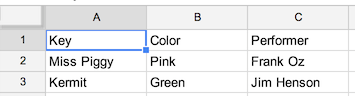
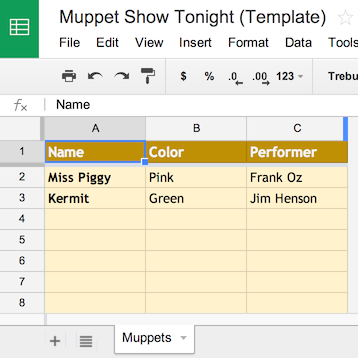

Welcome to SheetSync!¶
A python library to synchronize rows of data with a google spreadsheet.
Installation¶
Install from PyPi using pip, a package manager for Python.:
pip install sheetsync
Or to develop this library further, you can clone the git repo and install:
git clone git@github.com:mbrenig/SheetSync.git SheetSyncRepo
pip install SheetSyncRepo
Note, you may need to run the commands above with sudo.
Getting Started¶
SheetSync works with data in a dictionary of dictionaries. Each row is represented by a dictionary, and these are themselves stored in a dictionary indexed by a row-specific key. For example:
data = { "Kermit": {"Color" : "Green", "Performer" : "Jim Henson"},
"Miss Piggy" : {"Color" : "Pink", "Performer" : "Frank Oz"}
}
To insert this data (add or update rows) with a target sheet in a google spreadsheet document you do this:
import sheetsync
# Get or create a spreadsheet...
target = sheetsync.Sheet(username="googledriveuser@domain.com",
password="app-specific-password",
document_name="Let's try out SheetSync")
# Insert or update rows on the spreadsheet...
target.inject(data)
print "Review the new spreadsheet created here: %s" % target.document_href
This creates a new spreadsheet document in your google drive and then inserts the data like so:
Later on you’ll probably want to access this data, to do that note the spreadsheet’s document key from the URL:

and access the data as follows:
source = sheetsync.Sheet(username="googledriveuser@domain.com",
password="app-specific-password",
document_key="1bnieREGAyXZ2TnhXgYrIacCIY09Q2lfGXNZbjsvJ82M")
print source.data()
The ‘inject’ method only adds or updates rows. If you want to delete rows from the spreadsheet to keep it in sync with the input data then use the ‘sync’ method described in the ‘Synchronizing data’ section below.
Getting Silly¶
Let’s extend this example, and use more of SheetSync’s features. (With apologies in advance to the Muppets involved).
Key Column Headers¶
The first thing we’ll fix is that top-left cell with the value ‘Key’. The keys for our data are Names and the column header should reflect that. This is easy enough to do with the key_column_headers field:
target = sheetsync.Sheet(username="googledriveuser@domain.com",
password="app-specific-password",
document_name="Muppet Show Tonight",
key_column_headers=["Name"])
Templates for Formatting¶
Google’s spreadsheet API doesn’t currently allow control over cell formatting, but you can specify a template template spreadsheet that has the formatting you want - and use SheetSync to add data to a copy of the template. Here’s a template spreadsheet created to keep my list of Muppets:
https://docs.google.com/spreadsheets/d/1J__SpvQvI9S4bW-BkA0PmPykH8VVT9bdoWZ-AW7V_0U/edit#gid=0
The template’s document key is ‘1J__SpvQvI9S4bW-BkA0PmPykH8VVT9bdoWZ-AW7V_0U’ we can instruct SheetSync to use this as a basis for the new spreadsheet it creates as follows:
target = sheetsync.Sheet(username="googledriveuser@domain.com",
password="app-specific-password",
document_name="Muppet Show Tonight",
sheet_name="Muppets",
template_key="1J__SpvQvI9S4bW-BkA0PmPykH8VVT9bdoWZ-AW7V_0U",
key_column_headers=["Name"])
Note that I’ve also specified the worksheet name in that example with the ‘sheet_name’ parameter.
Folders¶
If you use folders to organize your Google drive, you can specify the folder a new spreadsheet will be created in. Use either the ‘folder_name’ or ‘folder_key’ parameters. Here for example I have a folder with the key “0B8rRHMfAlOZrWUw4LUhZejk4c0E”:

and instruct SheetSync to move the new spreadsheet into that folder with this code:
target = sheetsync.Sheet(username="googledriveuser@domain.com",
password="app-specific-password",
document_name="Muppet Show Tonight",
sheet_name="Muppets",
key_column_headers=["Name"],
template_key="1J__SpvQvI9S4bW-BkA0PmPykH8VVT9bdoWZ-AW7V_0U",
folder_key="0B8rRHMfAlOZrWUw4LUhZejk4c0E")
Formulas¶
Often you’ll need some columns to contain formulas that depend on data in other columns, and when new rows are inserted by SheetSync, ideally you’d want those formulas to be added too. When initializing the spreadsheet you can specify a row (typically above the header row) that contains reference formulas. Best illustrated by this example

https://docs.google.com/spreadsheets/d/1tn-lGqGHDrVbnW2PRvwie4LMmC9ZgYHWlbyTjCvwru8/edit#gid=0
Here row 2 contains formulas (Written out in row 1 for readability) that reference hidden columns. Row 3 contains the headers.
When new rows are added to this spreadsheet the ‘Photo’ and ‘Muppet’ columns will be populated with a formula similar to the reference row. Here are the parameters to set this up:
target = sheetsync.Sheet(username="googledriveuser@domain.com",
password="app-specific-password",
document_key="1tn-lGqGHDrVbnW2PRvwie4LMmC9ZgYHWlbyTjCvwru8",
sheet_name="Muppets",
key_column_headers=["Name"],
header_row_ix=3,
formula_ref_row_ix=2)
animal = {'Animal': {'Color': 'Red',
'Image URL': 'http://upload.wikimedia.org/wikipedia/en/e/e7/Animal_%28Muppet%29.jpg',
'Performer': 'Frank Oz',
'Wikipedia': 'http://en.wikipedia.org/wiki/Animal_(Muppet)'} }
target.inject(animal)
Synchronizing data¶
Until now all examples have shown injecting data into a spreadsheet ot add or update rows. As the name suggests, SheetSync also has a ‘sync’ method which will make sure the rows in the spreadsheet match the rows passed to the function. This might require that rows are deleted from the spreadsheet.
The default behavior is to not actually delete rows, but instead flag them for deletion with the “(DELETED)” being appended to the values of the Key columns. This is to help recovery from accidental deletions, but might not be desirable. Full row deletion can be enabled by passing the flag_deletes argument as follows:
target = sheetsync.Sheet(username="googledriveuser@domain.com",
password="app-specific-password",
document_key="1J__SABCD1234bW-ABCD1234kH8VABCD1234-AW7V_0U",
sheet_name="Muppets",
key_column_headers=["Name"],
flag_deletes=False)
new_list = { 'Kermit' : { 'Color' : 'Green',
'Performer' : 'Jim Henson' },
'Fozzie Bear' : {'Color' : 'Orange' } }
target.sync( new_list )
With rows for Miss Piggy and Kermit already in the spreadsheet, the sync function (in the example above) would remove Miss Piggy and add Fozzie Bear.
Taking backups¶
Couldn’t the sync function delete all my rows? Yes it could!
Some simple mistakes can cause bad results. For instance, if the key column headers on the spreadsheet don’t match those passed to the Sheet constructor the sync method will delete all the existing rows and add new ones! You could protect rows and ranges to guard against this, but perhaps the simplest way to mitigate the risk is by creating a backup of your spreadsheet before syncing data. Here’s an example:
target.backup("Backup of my important sheet. 16th June",
folder_name = "SheetSync Backups.")
This code would take a copy of the entire spreadsheet that the Sheet instance ‘target’ belongs to, name it “Backup of my important sheet. 16th June”, and move it to a folder named “SheetSync Backups.”.
Debugging¶
SheetSync uses the standard python logging module, the easiest way to find out what’s going on under the covers is to turn on all logging:
import sheetsync
import logging
# Set all loggers to DEBUG level..
logging.getLogger('').setLevel(logging.DEBUG)
# Register the default log handler to send logs to console..
logging.basicConfig()
If you find issues please raise them on github, and if you have fixes please submit pull requests. Thanks!